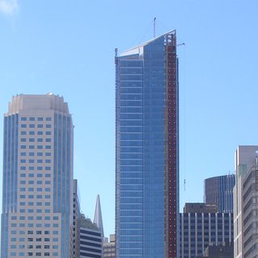

East Bay
San Francisco
Peninsula
South Bay
Elsewhere
News
« Previous
| 3 |
Next »
Chinatown Group Vows to Tackle Vacancies
Aug 11, 2016
Oakland Moves Forward on MacArthur Transit Village
Aug 11, 2016

Class Action Lawsuit Filed Against Millennium Tower Developer
Aug 10, 2016
Palo Alto Planning Commissioner Resigns Due to High Housing Costs
Aug 10, 2016
Activists Defend Pedestrian and Cyclist Spaces in Busy Downtown Intersection
Aug 9, 2016
Growing Pressure for Transit Investment in San Francisco
Aug 9, 2016
Campos Calls for Another Construction Moratorium in The Mission
Aug 8, 2016
Palo Alto Wages Land Use War Across Freeway
Aug 8, 2016
Supervisors Lack Votes to Oppose Governor's Housing Bill
Aug 8, 2016
Oakland Delays 416 Units in Chinatown
Aug 4, 2016
« Previous
| 3 |
Next »